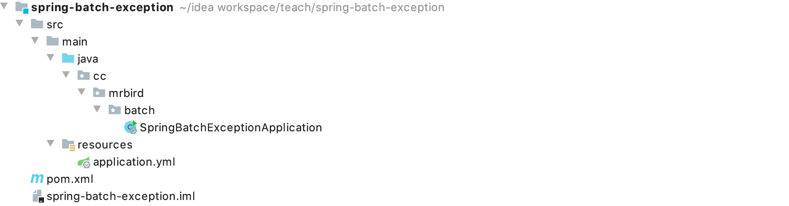

Spring Batch处理任务过程中如果发生了异常，默认机制是马上停止任务执行，抛出相应异常，如果任务还包含未执行的步骤也不会被执行。要改变这个默认规则，我们可以配置异常重试和异常跳过机制。异常跳过：遇到异常的时候不希望结束任务，而是跳过这个异常，继续执行；异常重试：遇到异常的时候经过指定次数的重试，如果还是失败的话，才会停止任务。除了这两个特性外，本文也会记录一些别的特性。
框架搭建
新建一个Spring Boot项目，版本为2.2.4.RELEASE，artifactId为spring-batch-exception，项目结构如下图所示：

剩下的数据库层的准备，项目配置，依赖引入和Spring Batch入门文章中的框架搭建步骤一致，这里就不再赘述。
下面我们演示下，默认情况下Spring Batch处理任务遇到异常是怎么处理的。
在cc.mrbird.batch目录下新建job包，然后在该包下新建DefaultExceptionJobDemo：
1 |
|
上面代码中，我们在Step的tasklet()方法中获取了执行上下文，并且判断执行上下文中是否包含keysuccess，如果包含，则任务执行成功；如果不包含，则抛出异常（抛出异常前，在执行上下文中添加successkey）。
启动项目，控制台日志打印如下：
1 | 2020-03-11 17:12:50.253 INFO 38673 --- [ main] o.s.b.c.l.support.SimpleJobLauncher : Job: [SimpleJob: [name=defaultExceptionJob]] launched with the following parameters: [{}] |
可以看到，默认情况下，Spring Batch处理任务过程中如果发生了异常会马上停止任务的执行。
再次启动项目，控制台输出如下：
1 | 2020-03-11 17:14:03.184 INFO 38691 --- [ main] o.s.b.c.l.support.SimpleJobLauncher : Job: [SimpleJob: [name=defaultExceptionJob]] launched with the following parameters: [{}] |
因为在上次任务抛出异常前，我们在执行上下文中添加successkey（配合MySQL持久化，不会因项目启动而丢失）。
异常重试
Spring Batch允许我们配置任务在遇到指定异常时进行指定次数的重试。在此之前，我们先定义一个自定义异常。在cc.mrbird.batch包下新建exception包，然后在该包下新建MyJobExecutionException：
1 | public class MyJobExecutionException extends Exception{ |
然后在job包下新建RetryExceptionJobDemo：
1 |
|
在step()方法中，faultTolerant()表示开启容错功能，retry(MyJobExecutionException.class)表示遇到MyJobExecutionException异常时进行重试，retryLimit(3)表示如果第三次重试还是失败的话，则抛出异常，结束任务。
通过前面的学习我们知道，步骤Step包括ItemReader、ItemWriter和ItemProcessor，上面配置的错误容忍是针对整个Step的，所以容忍的异常次数应该是reader，processor和writer中的总数，上面的例子仅在processor里演示异常重试。
myProcessor()的代码逻辑很简单，就是在前两次的时候抛出MyJobExecutionException("任务处理出错")异常（count < 2），第三次的时候正常返回item（count = 2 >= 2），所以理论上上面的任务在重试两次之后正常运行。
启动项目，控制台打印日志如下：
1 | 2020-03-12 09:04:53.359 INFO 40522 --- [ main] o.s.b.c.l.support.SimpleJobLauncher : Job: [SimpleJob: [name=retryExceptionJob]] launched with the following parameters: [{}] |
结果符合我们的预期。
假如通过retryLimit(2)将重试次数设置为2，并修改任务的名称为retryExceptionJob1，启动项目看看运行结果如何：
1 | v2020-03-12 09:06:48.855 INFO 40610 --- [ main] o.s.b.c.l.support.SimpleJobLauncher : Job: [SimpleJob: [name=retryExceptionJob1]] launched with the following parameters: [{}] |
异常次数超过了重试次数，所以抛出了异常。
异常跳过
我们也可以在Step中配置异常跳过，即遇到指定类型异常时忽略跳过它，在job包下新建SkipExceptionJobDemo：
1 |
|
在step()方法中，faultTolerant()表示开启容错功能，skip(MyJobExecutionException.class)表示遇到MyJobExecutionException异常时跳过，skipLimit(1)表示只跳过一次。
myProcessor()的逻辑是，当处理的item值为”2“的时候，抛出MyJobExecutionException("任务处理出错")异常。
此外我们还可以配置SkipListener类型监听器，在cc.mrbird.batch包下新建listener包，然后在该包下新建MySkipListener：
1 |
|
然后将它注入到SkipExceptionJobDemo，并配置：
1 |
|
启动项目，控制台日志打印如下：
1 | 2020-03-12 09:23:33.528 INFO 40759 --- [ main] o.s.b.c.l.support.SimpleJobLauncher : Job: [SimpleJob: [name=skipExceptionJob]] launched with the following parameters: [{}] |
事务问题
一次Setp分为Reader、Processor和Writer三个阶段，这些阶段统称为Item。默认情况下如果错误不是发生在Reader阶段，那么没必要再去重新读取一次数据。但是某些场景下需要Reader部分也需要重新执行，比如Reader是从一个JMS队列中消费消息，当发生回滚的时候消息也会在队列上重放，因此也要将Reader纳入到回滚的事物中，根据这个场景可以使用readerIsTransactionalQueue()来配置数据重读：
1 | private Step step() { |
我们还可以在Step中手动配置事务属性，事物的属性包括隔离等级（isolation）、传播方式（propagation）以及过期时间（timeout）等：
1 | private Step step() { |
重启机制
默认情况下，任务执行完毕的状态为COMPLETED，再次启动项目，该任务的Step不会再执行，我们可以通过配置allowStartIfComplete(true)来实现每次项目重新启动都将执行这个Step：
1 | private Step step() { |
某些Step可能用于处理一些先决的任务，所以当Job再次重启时这Step就没必要再执行，可以通过设置startLimit()来限定某个Step重启的次数。当设置为1时候表示仅仅运行一次，而出现重启时将不再执行：
1 | private Step step() { |
部分内容参考自：https://blog.csdn.net/sswltt/article/details/103817645
本章源码链接：https://github.com/wuyouzhuguli/SpringAll/tree/master/72.spring-batch-exception。